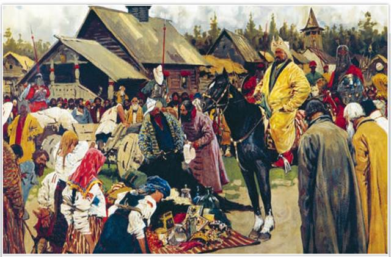
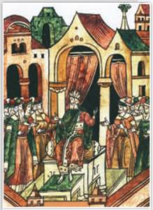
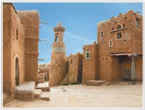
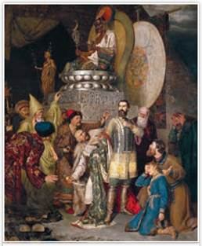
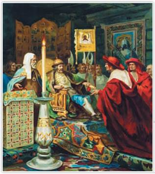
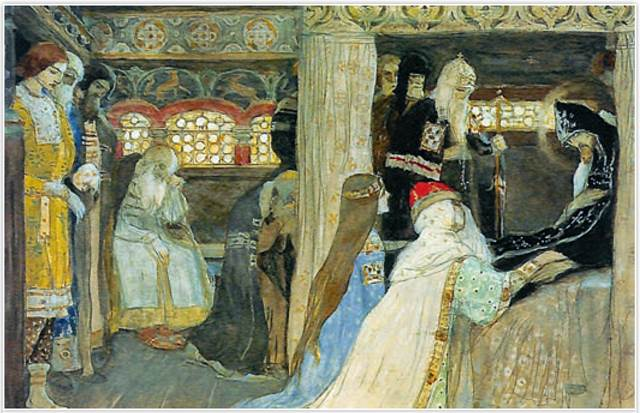

Баскаки. Художник С. Иванов. 1909 г.
Баскаки — это чиновники монгольских ханов. Они ведали контролем за сбором дани и учётом населения. По доносам баскаков хан направлял войско для карательного похода или вызывал непокорного князя на суд в Орду.
РОССИЯ
МИР
1. Последствия нашествия Батыя. Итоги Батыева нашествия для Южной и Северо-Восточной Руси оказались тяжёлыми. Из 74 городов домонгольской Руси, которые известны по археологическим раскопкам, 49 разорил Батый, 15 из них превратились в сёла, а 14 просто исчезли. Прежние политические центры — Владимир, Суздаль, Киев — пришли в запустение.
Боярские вотчины подверглись разорению. Сократилось население русских земель. Особенно много погибло горожан, а также воинов старшей и младшей дружины. Лучших ремесленников монголы угнали в Орду. Многие ремёсла, например производство булатной стали, стеклянной посуды, покрытие керамики глазурью, ювелирные техники, оказались утраченными. Разорение городов и уничтожение части ремёсел привело к сокращению товаров. Нарушились торговые связи.
Погибло множество храмов (например, Десятинная церковь в Киеве), сгорели летописи, книги, иконы. На долгие годы прекратилось каменное строительство.
Под властью Орды разобщённость русских земель только усилилась. Полоцкая Русь испытывала двойное давление: угрозу ордынского порабощения и вторжения крестоносцев. Полочане стали сближаться с молодым Литовским государством, возникшим в середине XIII в. Полоцкая земля присоединилась к Великому княжеству Литовскому.
Южная Русь в XIII в. пришла в запустение. По мнению ряда историков, Галицко-Волынская земля меньше других русских земель пострадала от нашествия Батыя, но и здесь сократилась численность населения.
2. Образование и расцвет Золотой Орды. В начале 1240-х гг. хан Батый обустраивал свой Улус Джучи, который принято называть Золотой Ордой. Государство Батыя разрослось за счёт причерноморских, прикаспийских, поволжских степей и Волжской Булгарии.
По сведениям папских послов, проезжавших через Золотую Орду в середине XIII в., это была мощная держава с огромной (до 600 тыс. человек) армией. Столицей Орды стала ханская ставка Сарай-Бату (Дворец Бату), основанная в низовьях Волги. Батый никогда не провозглашал свою независимость от Монгольской империи, но на деле имел неограниченную власть.

Хан Узбек. Миниатюра из летописи
СВИДЕТЕЛЬСТВО ЭПОХИ
Из записок арабского путешественника Ибн Баттуты. XIV в.
Когда этот султан (хан Узбек) в пути, то он (живёт) отдельно в ставке своей, и при нём его невольники и сановники... И в пребывании его на месте, и в путешествии его, и в делах его порядок удивительный, чудесный. Одна из привычек его (хана Узбека), что в пятницу, после молитвы, он садится в шатёр, называемый золотым, — разукрашенный и диковинный. Он (состоит) из деревянных прутьев, обтянутых золотыми листками. Посредине его деревянный престол, обложенный серебряными позолоченными листками; ножки его из чистого серебра, а верх его усыпан драгоценными камнями... Султан садится на престол... У подножия трона стоит справа (старший) сын султана... а слева — второй сын его...
В 1255 г. Батый скончался. Ему наследовал сын Сартак (1256), а потом внук Улагчи (1257). В 1257—1266 гг. ханом был Берке, младший брат Батыя. Он основал новую столицу (Новый Сарай), стал чеканить собственную монету и не считал себя подручником монгольского великого хана, сидевшего в Каракоруме.
Золотая Орда была многонациональным государством. Наряду с монголами в Орде жили булгары, половцы, башкиры, мордва, ясы и другие народы. Правление хана Узбёка (1313—1341) стало временем расцвета Золотой Орды. Огромные доходы ханской казне приносила караванная торговля между Азией и Европой по пути, проходившему по территории Орды, а также дань с покорённых земель. В 1313 г. Узбек объявил ислам государственной религией, что дало мощный толчок развитию культуры.
3. Генуэзские колонии в Северном Причерноморье. При хане Батые Крым оказался в составе Золотой Орды. Право пользования территориями Крымского улуса получили итальянские республики Генуя и Венеция. Купцы из Генуи обосновались в городе Каффа (Феодосии). Венецианцы затем вместе с генуэзцами осваивали Тану (ныне Азов). В эти города прибывали корабли из Венеции и Генуи, восточные караваны из Поволжья, Средней Азии и Китая. Там же купцы из русских земель продавали пушнину, зерно и другие товары, а покупали восточные пряности, красители, хлопок.
Постепенно всё большее значение приобретала работорговля. Через Тану и Каффу рабов везли на рынки Италии и Египта. Генуэзская колонизация расширялась в XIV в. и охватывала Южный берег Крыма с крепостями Солдайя (Судак), Чембало (Балаклава) и др. Мощные стены этих укреплений местами сохранились до сих пор. Населённые разными народностями, крымские города стали важными пунктами международной торговли между западными и восточными странами. Они пали под ударами Османской империи в 1475 г.
4. Ордынское владычество на Руси. Владычество Золотой Орды в русских землях выражалось в разных формах: хан своими ярлыками (грамотами) утверждал власть великих и удельных князей и получал регулярно дань. С XIV в. дань на Руси именовалась ордынским выходом. Также русские князья должны были оказывать монголам военную помощь.
Выплата дани для малопроизводительного хозяйства средневековой Руси означала потерю почти всех излишков. Веротерпимые монголы освобождали от дани служителей всех религий — христиан, мусульман, буддистов и т. д.
В XIII — начале XIV в. контроль за сбором дани и учётом населения в русских землях вели баскаки — представители хана Орды.
Содержание баскаков ложилось на данников. Наблюдали за сбором дани военные отряды. Перепись населения проводили особые чиновники — численники.

Сарай-Бату. Реконструкция
Правители Орды управляли князьями по принципу «разделяй и властвуй». Русские называли ордынского хана царём — титулом, равным императорскому. Сарай-Бату признавал очередной порядок престолонаследия, утвердившийся на Руси. Но хан Орды как верховный повелитель мог в любой момент нарушить его. Неповиновение населения жестоко каралось монгольскими ратями. Некоторые русские князья были казнены в Орде.
5. Взаимоотношения великих князей и Орды. Владимирский князь Ярослав Всеволодович первым из русских князей отправился к Батыю. Хан встретил его «с честью», ведь Ярослав не воевал с ним в 1237—1238 гг. (в те годы князь был в южных землях). Батый дал Ярославу ярлык на всю Русь, но отправил князя в столицу Монголии Каракорум для утверждения ярлыка. В Каракоруме мать великого хана лично угощала князя. Через 7 дней Ярослав заболел и скончался. По свидетельству посла папы римского Дж. Плано Карпини, многие подозревали, что русского князя отравили.
После известия о смерти Ярослава в стольный Владимир въехал его брат Святослав Всеволодович. Сыновья Ярослава — Александр и Андрей Ярославичи поехали в Орду просить ярлыков себе. Батый послал братьев в Каракорум, где Александр получил ярлык на разорённый Киев, Андрею достался Владимир. Но для Александра Киев был чужим, к тому же город до основания разорили монголы. Александр не поехал в Киев. Он вернулся в Новгород.
Проехав через всю Монгольскую империю, Александр увидел её военную мощь и смог понять невозможность военной победы над монголами для его родной Владимиро-Суздальской Руси. И тогда он решил ладить с Ордой. Папа римский предлагал ему покровительство, но получил отказ.
Подробнее. Согласно летописям, в XIII в., оказавшись в Орде, русские князья проходили через священный огонь и кланялись идолу Чингисхана. Черниговский князь Михаил Всеволодович, прибывший в ставку Батыя в 1246 г. по требованию хана, отказался это делать со словами: «Тебе, царь, кланяюсь, потому что Бог поручил тебе царствовать на этом свете. А тому, чему велишь поклониться, — не поклонюсь». Батый приказал казнить непокорного Михаила, который стал первым русским князем, убитым в Орде.

Князь Михаил Черниговский в Орде. Художник В. Смирнов. 1883 г.
Князь Андрей Ярославич и галицкий князь Даниил Романович думали иначе и даже заключили союз для сопротивления Орде. Даниил надеялся на поддержку католических стран. Он вёл переговоры с папой римским о Крестовом походе на монголов, обещал за помощь перейти в католичество, но всё же ему пришлось признать свою зависимость от Орды.
В 1252 г. князь Андрей Ярославич не захотел повиноваться ордынцам. Для усмирения непокорных Орда отправила в Северо-Восточную Русь карательное войско во главе с Неврюем. Неврюева рать разгромила отряды Андрея под Переяславлем-Залесским, пролилось немало крови, начался массовый грабёж населения. Андрей бежал в Новгород, а потом в Швецию. Через несколько лет он вернулся на родину.
Одновременно с Неврюевой ратью в Галицко-Волынскую землю отправилось войско ордынского военачальника Куремсы. Набег отрядов Куремсы Даниил отразил. Но вместо военной помощи он получил от папы римского лишь королевский титул и корону. В борьбе с Ордой он мог рассчитывать только на свои силы.
На примере Даниила Галицкого Александр Ярославич видел, что сближение с Римом оказалось бесполезным для сопротивления Орде. В 1252 г. Александр получил ярлык на владимирское княжение.

Александр Невский принимает папских легатов. Художник Г. Семирадский. 1876 г. Государственный Русский музей. Санкт-Петербург
Подробнее. Перед Александром Ярославичем стоял непростой выбор: подчиниться воле ордынских ханов и таким образом избежать полного разорения Руси или пойти на союз с католиками в надежде получить от них поддержку в противостоянии с Ордой. Орда в отличие от западных рыцарей-крестоносцев не претендовала на русские земли и не навязывала свою веру, хотя ордынское владычество нанесло Руси огромный ущерб. Александр выбрал первый путь. Историки С. Соловьёв и В. Ключевский называли Даниила Галицкого и Александра Невского выдающимися русскими князьями XIII в. Отдавая должное борьбе Даниила с Ордой, они пришли к выводу, что политика Александра Ярославича принесла Руси больше пользы. Северо-Восточная Русь стала истоком будущей России, в то время как Галицко-Волынскую землю ожидал закат. Во второй четверти XIV в. она перестала существовать. Государственность Галицко-Волынской земли разрушилась под тяжестью внутренних распрей и традиционно запутанных отношений с Польшей, Венгрией, соседними русскими землями, а также с Ордой.
6. Владимирское княжение Александра Невского. В 1257 г. во Владимирской и Рязанской землях ордынские численники провели перепись русского населения (взяли «число»). Историк С. Соловьёв считал перепись полезной, так как после её проведения дань распределили равномерно на всё население Руси, что умерило произвол баскаков.
Новгородцы же воспротивились переписи — не хотели давать «число». В 1257 и 1259 гг. в Новгороде вспыхивали восстания. Александр убедил новгородцев послать дары хану, а монголам советовал не проводить перепись в Новгороде. В 1259 г. вече с трудом по совету «лучших людей» согласилось дать «число». Так новгородцы стали данниками Орды.

Кончина благоверного князя Александра Невского. Фрагмент. Художник М. Нестеров. 1902—1904 гг. Эскиз росписи стены церкви во имя благоверного князя Александра Невского в Абастумани (Грузия)
Новгородцы не только из страха признали зависимость от Орды. Новгород получал большие прибыли от торговли восточными товарами с Западной Европой. Но Восток теперь контролировала Орда, без её согласия новгородская торговля с восточными странами была невозможна. Поссорившись с Александром, Новгород не получил бы помощи и в борьбе с крестоносцами.
В 1262 г. в русских городах начались волнения. В Ростове, Суздале, Владимире, Ярославле побили бесерменов — купцов-мусульман, получивших от Каракорума право сбора дани. Александр собрал дань и сам поехал в Орду отводить угрозу карательной рати. Берке, восседавший в то время на ханском престоле, «закрыл глаза» на избиение сборщиков дани.
В Орде Александр Ярославич заболел и на обратном пути домой 14 ноября 1263 г. умер в Городце. Похоронили князя с плачем и великими почестями в церкви Рождественского монастыря во Владимире.
ПОДВЕДЁМ ИТОГИ
В период правления ханов Батыя и Берке Золотая Орда превратилась в могущественное самостоятельное государство, крупнейшее в Евразии. Свой расцвет она переживала в годы правления хана Узбека. Русские земли попали в политическую и экономическую зависимость от ордынских ханов.
Вопросы и задания
Работаем с хронологией
Расположите в хронологической последовательности события: 1) принятие ислама в Орде; 2) начало проведения переписи населения на Руси; 3) поездка Ярослава Всеволодовича к Батыю; 4) кончина Александра Невского; 5) Неврюева рать.
Работаем с источником
I. Прочитайте отрывок из книги историка Е. Шмурло «История России. 862—1917» и ответьте на вопросы.
Сначала он долго не идёт в Орду: ему оскорбительна сама мысль о предстоящем горьком унижении, а в конце концов он всё-таки поехал! Выпил чашу унижения — и понапрасну; пользы из этого не извлёк никакой: всё равно потом не выдержал и взбунтовался против хана. Правда, побуждения у него благородные: «злее зла честь татарская» — почести, оказанные ему в Орде; а в конечном результате новое нашествие татар на его землю и новое разорение края — именно то, от чего умел избавить Александр Невский свою Северо-Восточную Русь. Также непостоянен Даниил и с Литвой: то против неё, то заодно с ней. В расчёте на помощь римского престола он принимает католичество и с ним королевский венец, но потом, обманутый в надеждах, резко порывает духовные связи с Римом.
II. Прочитайте отрывок из книги Н. Костомарова «Русская история в жизнеописаниях её главнейших деятелей». Выполните задание и ответьте на вопрос.
Папа Иннокентий IV прислал к Александру в 1251 г. двух кардиналов... Папа... представлял выгоды, какие русский князь и Русь получат от этого подчинения, и обещал против татар помощь тех самых рыцарей, от которых недавно Александр освобождал русские земли... Не подлежит сомнению, что Александр не поддался увещаниям и отказал наотрез. Посольство это повлекло за собою в последующей русской истории множество подобных посольств, также бесполезных. Александр мог оружием переведаться с западными врагами и остановить их покушения овладеть Северною Русью: но не мог он с теми же средствами действовать против восточных врагов. Западные враги только намеревались покорить Северную Русь, а восточные уже успели покорить прочие русские земли, опустошить и обезлюдить их. При малочисленности, нищете и разрозненности остатков тогдашнего русского населения в восточных землях нельзя было и думать о том, чтобы выбиться оружием из-под власти монголов. Надобно было избрать другие пути.
Работаем с понятиями
Объясните значение понятий «ярлык», «баскаки».
ДОПОЛНИТЕЛЬНЫЕ МАТЕРИАЛЫ
«УЧИТЕЛЮ И УЧЕНИКУ».
Материалы к параграфу на портале «История.РФ».